Outro post com uma introdução de como ajustar e analisar SVM.
Já vimos em outro post a teoria e um exemplo de Support Vector Machines (SVM). Neste vamos ver mais exemplos mostrando o funcionamento da técnica.
Para isso, vamos usar a biblioteca e1071 no R para demonstrar. Outra opção é a biblioteca LiblineaR, que é útil para problemas lineares muito grandes.
A biblioteca e1071 contém implementações para vários métodos de aprendizado estatístico. Em particular, a função svm() pode ser usada para ajustar um classificador de vetor de suporte (SVM) quando o argumento kernel = “linear” é especificado. Essa função utiliza um argumento cost permite especificar o custo de uma violação da margem.
Quando o valor de cost é pequeno, as margens serão amplas, e muitos vetores de suporte estarão na margem ou a violarão. Quando o valor de cost é grande, as margens serão estreitas, e poucos vetores de suporte estarão na margem ou a violarão.
Agora usamos a função svm() para ajustar o classificador de vetor de suporte para um dado valor do parâmetro de custo. Aqui, demonstramos o uso dessa função em um exemplo bidimensional para que possamos traçar o limite de decisão resultante. Começamos gerando as observações, que pertencem a duas classes, e verificamos se as classes são linearmente separáveis.
# Define a semente para geração de números aleatórios, garantindo reprodutibilidade.
set.seed(1)
# Cria uma matriz 'x' com 20 linhas e 2 colunas, preenchida com valores aleatórios
# provenientes de uma distribuição normal padrão (média 0, desvio padrão 1).
x <- matrix(rnorm(20 * 2), ncol = 2)
# Cria um vetor de classes 'y', onde os primeiros 10 elementos são -1 e os
# últimos 10 elementos são 1, representando duas categorias distintas.
y <- c(rep(-1, 10), rep(1, 10))
# Para os pontos associados à classe 1 (y == 1), desloca as coordenadas adicionando 1,
# criando uma separação mais clara entre as classes no espaço bidimensional.
x[y == 1, ] <- x[y == 1, ] + 1
# Plota os pontos em um gráfico bidimensional. A cor dos pontos é definida com base
# em `(3 - y)`, atribuindo cores diferentes para as duas classes (-1 e 1).
plot(x, col = (3 - y))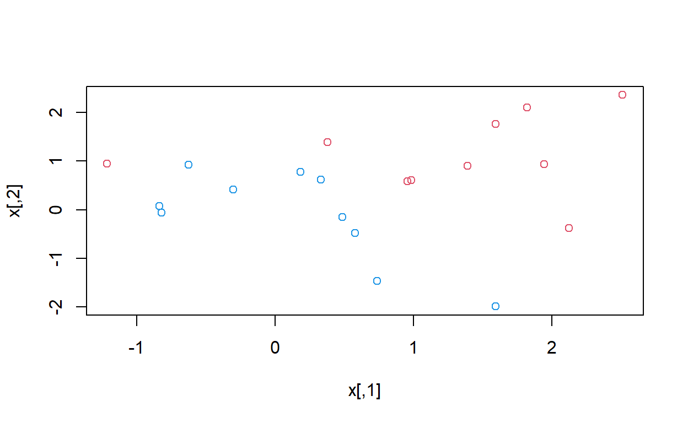
Elas não são linearmente separáveis. Em seguida, ajustamos o classificador de vetor de suporte. Observe que, para que a função svm() realize classificação (em vez de regressão baseada em SVM), é necessário codificar a variável de resposta como uma variável do tipo fator. Agora, criamos um data frame com a resposta codificada como um fator.
# Cria um data frame 'dat' contendo as variáveis 'x' (matriz de preditores) e 'y' (variável de resposta)
# A variável de resposta 'y' é convertida para o tipo fator, necessário para classificação
dat <- data.frame(x = x, y = as.factor(y))
# Carrega a biblioteca 'e1071', que contém a função 'svm()' para ajustar modelos SVM
library(e1071)
# Ajusta um modelo de SVM ao conjunto de dados 'dat' usando:
# - 'y ~ .' para especificar a fórmula, onde 'y' é a variável de resposta e '.' representa todas as variáveis preditoras
# - kernel = "linear" para usar o kernel linear no classificador de vetor de suporte
# - cost = 10 para especificar o custo de violação da margem (quanto maior o custo, mais estritas as margens)
# - scale = FALSE para evitar a padronização dos preditores
svmfit <- svm(y ~ ., data = dat, kernel = "linear", cost = 10, scale = FALSE)
plot(svmfit, dat)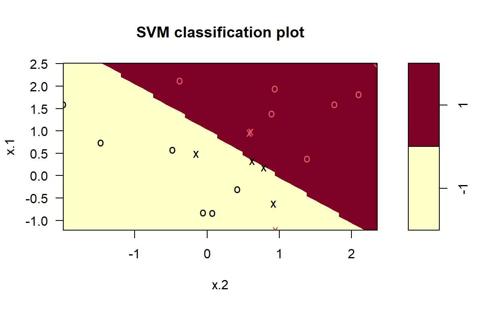
Observe que os dois argumentos para a função plot() do SVM são a saída da chamada para svm() e os dados utilizados nessa chamada. A região do espaço de atributos atribuída à classe -1 é exibida em amarelo claro, enquanto a região atribuída à classe +1 é mostrada em vermelho. O limite de decisão entre as duas classes é linear (porque usamos o argumento kernel = “linear”). No entanto, devido à forma como a função de plotagem foi implementada nesta biblioteca, o limite de decisão parece um pouco irregular no gráfico.
(Note que aqui o segundo atributo é plotado no eixo x e o primeiro atributo é plotado no eixo y, em contraste com o comportamento usual da função plot() no R.)
Os vetores de suporte são representados como cruzes, e as demais observações são representadas como círculos. Podemos observar que existem sete vetores de suporte neste exemplo. Suas identidades podem ser determinadas da seguinte forma:
svmfit$index[1] 1 2 5 7 14 16 17Podemos obter algumas informações básicas sobre o classificador de vetor de suporte ajustado usando o comando summary()
summary(svmfit)
Call:
svm(formula = y ~ ., data = dat, kernel = "linear", cost = 10,
scale = FALSE)
Parameters:
SVM-Type: C-classification
SVM-Kernel: linear
cost: 10
Number of Support Vectors: 7
( 4 3 )
Number of Classes: 2
Levels:
-1 1Isso nos informa, por exemplo, que foi utilizado um kernel linear com cost = 10 e que havia sete vetores de suporte, sendo quatro em uma classe e três na outra.
E se, em vez disso, usarmos um valor menor para o parâmetro de custo (cost)?Isso nos informa, por exemplo, que foi utilizado um kernel linear com cost = 10 e que havia sete vetores de suporte, sendo quatro em uma classe e três na outra.
E se, em vez disso, usarmos um valor menor para o parâmetro de custo (cost)?
# Ajusta um modelo SVM ao conjunto de dados 'dat', agora com:
# - kernel = "linear" para manter o kernel linear
# - cost = 0.1 para reduzir o custo de violação da margem
# (margens mais amplas e maior tolerância a violações, resultando em mais vetores de suporte)
# - scale = FALSE para evitar a padronização dos preditores
svmfit <- svm(y ~ ., data = dat, kernel = "linear", cost = 0.1, scale = FALSE)
# Plota o modelo ajustado junto com os dados
# O gráfico mostra as regiões de decisão, os limites de decisão e os vetores de suporte
plot(svmfit, dat)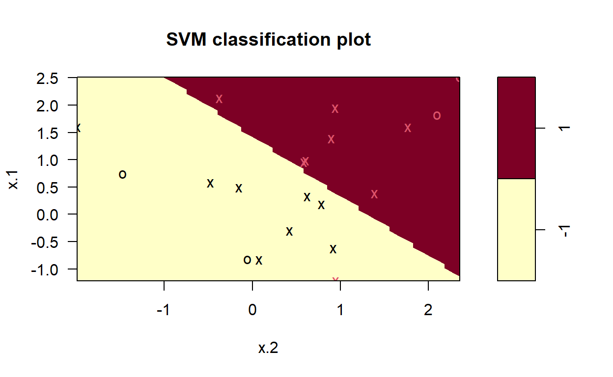
# Exibe os índices das observações que foram identificadas como vetores de suporte
# A redução no valor de 'cost' normalmente resulta em mais vetores de suporte, já que a margem é menos restritiva
svmfit$index [1] 1 2 3 4 5 7 9 10 12 13 14 15 16 17 18 20Agora que um valor menor para o parâmetro de custo está sendo usado, obtemos um maior número de vetores de suporte, pois a margem agora é mais ampla. Infelizmente, a função svm() não fornece explicitamente os coeficientes da fronteira de decisão linear obtida ao ajustar o classificador de vetor de suporte, nem informa a largura da margem.
A biblioteca e1071 inclui uma função integrada, tune(), para realizar validação cruzada. Por padrão, a função tune() realiza validação cruzada com dez divisões (ten-fold cross-validation) em um conjunto de modelos de interesse.
Para usar essa função, passamos informações relevantes sobre o conjunto de modelos que queremos avaliar. O comando a seguir indica que queremos comparar SVMs com um kernel linear, usando uma faixa de valores para o parâmetro de custo.
# Define uma semente para garantir a reprodutibilidade dos resultados
set.seed(1)
# Realiza validação cruzada para encontrar o melhor modelo SVM
# - A função `tune()` realiza a validação cruzada para os modelos especificados
# - O primeiro argumento é a função `svm` a ser ajustada
# - A fórmula `y ~ .` especifica a variável de resposta 'y' e todos os preditores de 'dat'
# - kernel = "linear" define o uso de um kernel linear para o classificador SVM
# - ranges = list(cost = c(0.001, 0.01, 0.1, 1, 5, 10, 100)) especifica a faixa de valores para o parâmetro `cost`
# (a função `tune()` irá comparar modelos com cada um desses valores de custo)
tune.out <- tune(svm, y ~ ., data = dat, kernel = "linear",
ranges = list(cost = c(0.001, 0.01, 0.1, 1, 5, 10, 100)))Podemos acessar facilmente os erros de validação cruzada para cada um desses modelos usando o comando summary():
summary(tune.out)
Parameter tuning of 'svm':
- sampling method: 10-fold cross validation
- best parameters:
cost
0.1
- best performance: 0.05
- Detailed performance results:
cost error dispersion
1 1e-03 0.55 0.4377975
2 1e-02 0.55 0.4377975
3 1e-01 0.05 0.1581139
4 1e+00 0.15 0.2415229
5 5e+00 0.15 0.2415229
6 1e+01 0.15 0.2415229
7 1e+02 0.15 0.2415229Vemos que o valor de cost = 0.1 resulta na menor taxa de erro de validação cruzada. A função tune() armazena o melhor modelo obtido, que pode ser acessado da seguinte maneira:
bestmod <- tune.out$best.model
summary(bestmod)
Call:
best.tune(METHOD = svm, train.x = y ~ ., data = dat, ranges = list(cost = c(0.001,
0.01, 0.1, 1, 5, 10, 100)), kernel = "linear")
Parameters:
SVM-Type: C-classification
SVM-Kernel: linear
cost: 0.1
Number of Support Vectors: 16
( 8 8 )
Number of Classes: 2
Levels:
-1 1A função predict() pode ser usada para prever o rótulo de classe em um conjunto de observações de teste, para qualquer valor dado do parâmetro cost. Para começar, geramos um conjunto de dados de teste. Aqui está como isso pode ser feito:
# Gera um conjunto de dados de teste com 20 observações (10 para cada classe)
# 'rnorm(20 * 2)' gera 40 números aleatórios a partir de uma distribuição normal
# A matriz 'xtest' tem 20 linhas (observações) e 2 colunas (atributos)
xtest <- matrix(rnorm(20 * 2), ncol = 2)
# Cria uma variável de resposta 'ytest' com 20 valores aleatórios,
# escolhendo entre -1 e 1 (usando 'sample()' com substituição)
ytest <- sample(c(-1, 1), 20, rep = TRUE)
# Modifica as observações em 'xtest' que correspondem à classe 1 (ytest == 1)
# Para essas observações, soma 1 aos seus valores para separá-las mais claramente de ytest == -1
xtest[ytest == 1, ] <- xtest[ytest == 1, ] + 1
# Cria um data frame 'testdat' combinando as variáveis 'xtest' e 'ytest',
# com a variável de resposta 'ytest' convertida para fator
testdat <- data.frame(x = xtest, y = as.factor(ytest))Agora, fazemos a previsão dos rótulos de classe para essas observações de teste. Aqui, usamos o melhor modelo obtido através da validação cruzada para fazer as previsões.
# Usa o modelo 'bestmod' (melhor modelo obtido) para prever os rótulos de classe
# no conjunto de dados de teste 'testdat'
ypred <- predict(bestmod, testdat)
# Cria uma tabela de contingência comparando as previsões (ypred) com os valores reais (testdat$y)
# A tabela de contingência mostra as predições versus os rótulos verdadeiros, permitindo avaliar o desempenho do modelo
table(predict = ypred, truth = testdat$y) truth
predict -1 1
-1 9 1
1 2 8Assim, com esse valor de custo, 17 das observações de teste são classificadas corretamente. E se tivéssemos usado, em vez disso, cost = 0.01?
# Ajusta um modelo SVM usando o conjunto de dados 'dat' com um kernel linear e o parâmetro 'cost' ajustado para 0.01
# O parâmetro 'scale = FALSE' indica que os dados não devem ser normalizados antes de treinar o modelo
svmfit <- svm(y ~ ., data = dat, kernel = "linear", cost = 0.01, scale = FALSE)
# Usa o modelo ajustado 'svmfit' para prever os rótulos de classe no conjunto de dados de teste 'testdat'
ypred <- predict(svmfit, testdat)
# Cria uma tabela de contingência comparando as previsões (ypred) com os valores reais (testdat$y)
# Isso permite avaliar o desempenho do modelo ajustado com cost = 0.01, mostrando quantas predições foram corretas ou incorretas
table(predict = ypred, truth = testdat$y) truth
predict -1 1
-1 11 6
1 0 3Neste caso, três observações adicionais são classificadas incorretamente. Agora, considere uma situação em que as duas classes são linearmente separáveis. Então, podemos encontrar um hiperplano de separação usando a função svm(). Primeiro, separamos ainda mais as duas classes nos nossos dados simulados para que elas se tornem linearmente separáveis.
# Modifica as observações de 'x' que pertencem à classe 1 (y == 1).
# Para essas observações, soma 0.5 a cada valor de 'x' correspondente,
# movendo-as para separar mais claramente as classes.
x[y == 1, ] <- x[y == 1, ] + 0.5
# Plota as observações de 'x'. O argumento 'col = (y + 5) / 2'
# atribui cores diferentes às classes, com a classe -1 sendo uma cor
# e a classe 1 sendo outra. A fórmula (y + 5) / 2 mapeia os valores
# -1 e 1 para 2 e 3, respectivamente, garantindo cores distintas.
# O argumento 'pch = 19' define o tipo de ponto (pontos sólidos).
plot(x, col = (y + 5) / 2, pch = 19)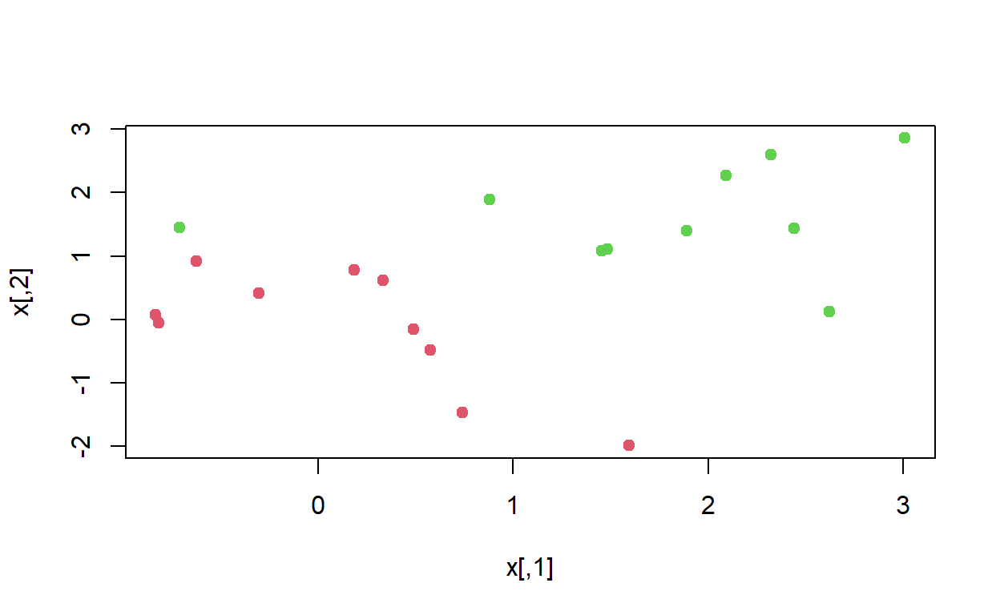
Agora, as observações são apenas um pouco separáveis linearmente. Ajustamos o classificador de vetores de suporte e plotamos o hiperplano resultante, utilizando um valor muito grande de custo para garantir que nenhuma observação seja classificada incorretamente.
Este processo geralmente é feito para obter um modelo com uma margem muito estreita, onde as observações são separadas de maneira tão precisa que não há erros de classificação. O valor alto de cost força o modelo a se ajustar rigidamente aos dados, minimizando o número de erros de classificação, mas isso pode levar a um modelo com pouca capacidade de generalização.
# Cria um data frame 'dat' contendo as variáveis 'x' e 'y', onde 'x' é a matriz de características
# e 'y' é a variável de resposta convertida para um fator (necessário para classificação).
dat <- data.frame(x = x, y = as.factor(y))
# Ajusta um modelo SVM com kernel linear usando a função 'svm()',
# configurando o parâmetro 'cost' para um valor muito grande (1e5), o que resulta
# em uma margem estreita e em nenhum erro de classificação nas observações.
svmfit <- svm(y ~ ., data = dat, kernel = "linear", cost = 1e5)
# Exibe um resumo do modelo SVM ajustado. Isso inclui informações sobre o número de suporte vetores,
# o valor do custo e outros parâmetros do modelo.
summary(svmfit)
Call:
svm(formula = y ~ ., data = dat, kernel = "linear", cost = 1e+05)
Parameters:
SVM-Type: C-classification
SVM-Kernel: linear
cost: 1e+05
Number of Support Vectors: 3
( 1 2 )
Number of Classes: 2
Levels:
-1 1# Plota o hiperplano de decisão gerado pelo modelo 'svmfit' junto com os dados.
# O gráfico mostra a separação das classes, com os vetores de suporte representados
# como pontos destacados e a linha de decisão (hiperplano) entre as classes.
plot(svmfit, dat)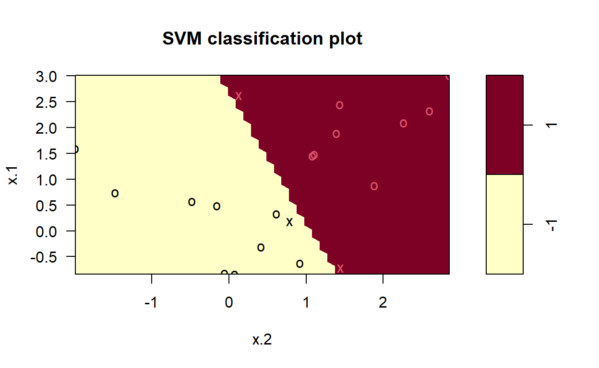
Nenhum erro de treinamento foi cometido e apenas três vetores de suporte foram usados. No entanto, podemos ver na figura que a margem é muito estreita (porque as observações que não são vetores de suporte, indicadas como círculos, estão muito próximas da fronteira de decisão). Parece provável que esse modelo tenha um desempenho ruim com dados de teste. Agora, tentamos um valor menor para o parâmetro cost.
Call:
svm(formula = y ~ ., data = dat, kernel = "linear", cost = 1)
Parameters:
SVM-Type: C-classification
SVM-Kernel: linear
cost: 1
Number of Support Vectors: 7
( 4 3 )
Number of Classes: 2
Levels:
-1 1plot(svmfit, dat)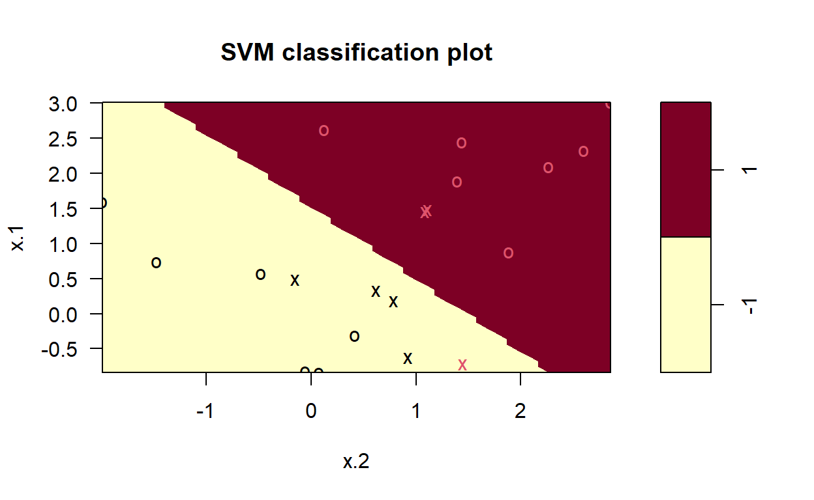
Usando cost = 1, classificamos incorretamente uma observação de treinamento, mas também obtemos uma margem muito mais ampla e utilizamos sete vetores de suporte. Parece provável que este modelo tenha um desempenho melhor com dados de teste do que o modelo com cost = 1e5
Para ajustar um SVM usando um kernel não linear, utilizamos novamente a função svm(). No entanto, agora usamos um valor diferente para o parâmetro kernel. Para ajustar um SVM com um kernel polinomial, usamos kernel = “polynomial”, e para ajustar um SVM com um kernel radial, usamos kernel = “radial”. No primeiro caso, também usamos o argumento degree para especificar um grau para o kernel polinomial, e no segundo caso, usamos gamma para especificar um valor para o kernel de base radial.
Primeiro, geramos alguns dados com uma fronteira de classe não linear, como segue:
# Define a semente para reprodutibilidade dos resultados
set.seed(1)
# Cria uma matriz de 200 observações e 2 variáveis com distribuição normal padrão
x <- matrix(rnorm(200 * 2), ncol = 2)
# Desloca as primeiras 100 observações para a direita
x[1:100, ] <- x[1:100, ] + 2
# Desloca as observações de 101 a 150 para a esquerda
x[101:150, ] <- x[101:150, ] - 2
# Cria o vetor de resposta com 150 valores para a classe 1 e 50 para a classe 2
y <- c(rep(1, 150), rep(2, 50))
# Combina as características e a resposta em um data frame
dat <- data.frame(x = x, y = as.factor(y))Plotar os dados deixa claro que a fronteira entre as classes é, de fato, não linear.
plot(x, col = y)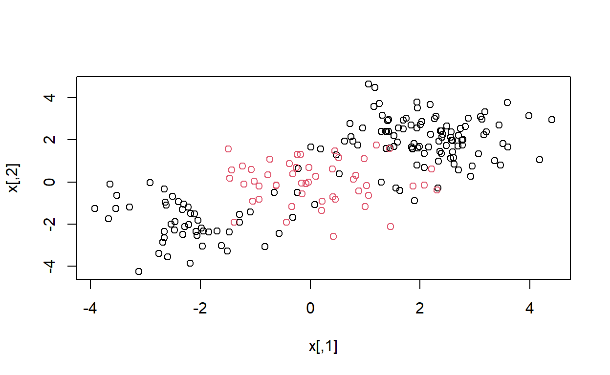
Os dados são divididos aleatoriamente em grupos de treinamento e teste. Em seguida, ajustamos os dados de treinamento usando a função svm() com um núcleo radial e \(\gamma = 1\)
# Seleciona aleatoriamente 100 índices para o conjunto de treinamento
train <- sample(200, 100)
# Ajusta o modelo SVM com núcleo radial, parâmetro gamma = 1 e custo = 1
svmfit <- svm(y ~ ., data = dat[train, ], kernel = "radial", gamma = 1, cost = 1)
# Plota a decisão do modelo SVM para os dados de treinamento
plot(svmfit, dat[train, ])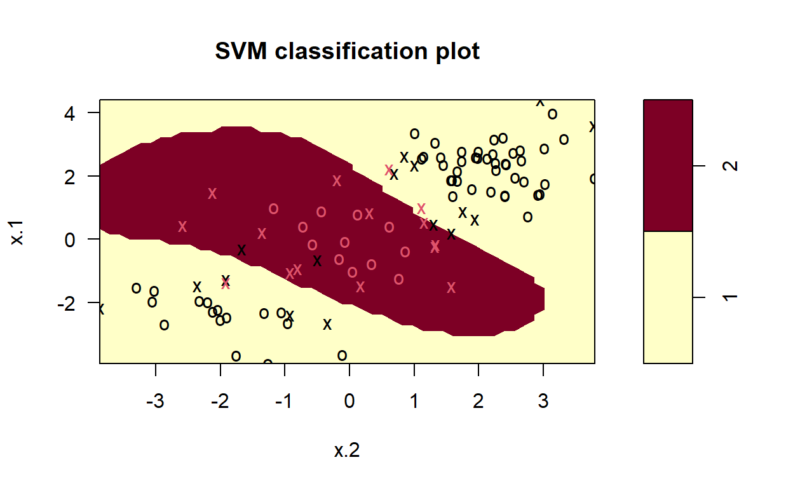
O gráfico mostra que o SVM resultante tem uma fronteira decididamente não linear. A função summary() pode ser usada para obter algumas informações sobre o ajuste do SVM.
summary(svmfit)
Call:
svm(formula = y ~ ., data = dat[train, ], kernel = "radial",
gamma = 1, cost = 1)
Parameters:
SVM-Type: C-classification
SVM-Kernel: radial
cost: 1
Number of Support Vectors: 31
( 16 15 )
Number of Classes: 2
Levels:
1 2Podemos ver na figura que há um número considerável de erros de treinamento neste ajuste do SVM. Se aumentarmos o valor de custo, podemos reduzir o número de erros de treinamento. No entanto, isso vem à custa de uma fronteira de decisão mais irregular, que parece estar em risco de sobreajustar os dados.
# Ajusta o modelo SVM com núcleo radial, gamma = 1 e custo muito alto (1e5) para reduzir erros de treinamento
svmfit <- svm(y ~ ., data = dat[train, ], kernel = "radial", gamma = 1, cost = 1e5)
# Plota a decisão do modelo SVM para os dados de treinamento com o novo valor de custo
plot(svmfit, dat[train, ])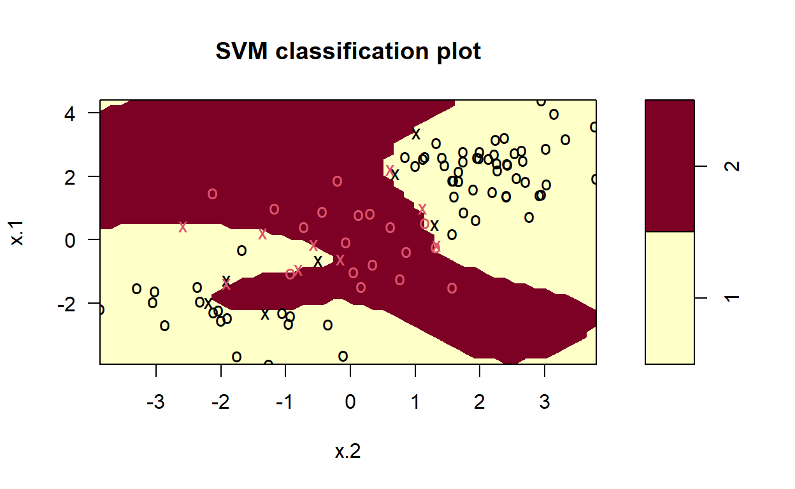
Podemos realizar validação cruzada usando a função tune() para selecionar a melhor escolha de gamma e cost para um SVM com núcleo radial.
# Define semente para reprodução dos resultados
set.seed(1)
# Realiza validação cruzada para otimizar os parâmetros cost e gamma em um SVM com kernel radial
tune.out <- tune(svm, y ~. , data = dat[train, ],
kernel = "radial", # Kernel radial
ranges = list( # Definição dos intervalos dos parâmetros
cost = c(0.1, 1, 10, 100, 1000), # Valores para o parâmetro cost
gamma = c(0.5, 1, 2, 3, 4) # Valores para o parâmetro gamma
))
# Exibe o resumo dos resultados da validação cruzada
summary(tune.out)
Parameter tuning of 'svm':
- sampling method: 10-fold cross validation
- best parameters:
cost gamma
1 0.5
- best performance: 0.07
- Detailed performance results:
cost gamma error dispersion
1 1e-01 0.5 0.26 0.15776213
2 1e+00 0.5 0.07 0.08232726
3 1e+01 0.5 0.07 0.08232726
4 1e+02 0.5 0.14 0.15055453
5 1e+03 0.5 0.11 0.07378648
6 1e-01 1.0 0.22 0.16193277
7 1e+00 1.0 0.07 0.08232726
8 1e+01 1.0 0.09 0.07378648
9 1e+02 1.0 0.12 0.12292726
10 1e+03 1.0 0.11 0.11005049
11 1e-01 2.0 0.27 0.15670212
12 1e+00 2.0 0.07 0.08232726
13 1e+01 2.0 0.11 0.07378648
14 1e+02 2.0 0.12 0.13165612
15 1e+03 2.0 0.16 0.13498971
16 1e-01 3.0 0.27 0.15670212
17 1e+00 3.0 0.07 0.08232726
18 1e+01 3.0 0.08 0.07888106
19 1e+02 3.0 0.13 0.14181365
20 1e+03 3.0 0.15 0.13540064
21 1e-01 4.0 0.27 0.15670212
22 1e+00 4.0 0.07 0.08232726
23 1e+01 4.0 0.09 0.07378648
24 1e+02 4.0 0.13 0.14181365
25 1e+03 4.0 0.15 0.13540064Portanto, a melhor escolha de parâmetros envolve cost = 1 e gamma = 0.5. Podemos visualizar as previsões do conjunto de testes para este modelo aplicando a função predict() aos dados. Note que, para fazer isso, fazemos um subconjunto do data frame dat usando -train como conjunto de índice.
# Criando uma tabela de contingência para comparar as classes reais com as preditas
tabela <- table(
true = dat[-train, "y"], # Seleciona as classes reais dos dados de teste (excluindo o índice de treino)
pred = predict( # Faz previsões com o melhor modelo encontrado pelo tune()
tune.out$best.model, # Modelo ajustado com os melhores parâmetros
newdata = dat[-train, ] # Utiliza os dados de teste (dados fora do conjunto de treino)
)
)
tabela pred
true 1 2
1 67 10
2 2 21prop.table(tabela) pred
true 1 2
1 0.67 0.10
2 0.02 0.2112% das observações de teste são classificadas incorretamente por este SVM
O pacote ROCR pode ser usado para produzir curvas ROC. Primeiro, escrevemos uma função curta para traçar uma curva ROC, dado um vetor contendo uma pontuação numérica para cada observação (pred) e um vetor contendo o rótulo da classe para cada observação (truth).
# Carrega o pacote ROCR
library(ROCR)
# Define uma função para plotar uma curva ROC
rocplot <- function(pred, truth, ...) {
# Cria um objeto de previsão com as pontuações e os rótulos reais
predob <- prediction(pred, truth)
# Calcula a performance (taxa de verdadeiros positivos vs. falsos positivos)
perf <- performance(predob, "tpr", "fpr")
# Plota a curva ROC
plot(perf, ...)
}SVMs e classificadores de vetores de suporte produzem rótulos de classe para cada observação. No entanto, também é possível obter valores ajustados para cada observação, que são as pontuações numéricas usadas para determinar os rótulos de classe. Por exemplo, no caso de um classificador de vetor de suporte, o valor ajustado para uma observação \[ \mathbf{X} = (X_1, X_2, \ldots, X_p)^T \] assume a forma \[ \hat{\beta}_0 + \hat{\beta}_1 X_1 + \hat{\beta}_2 X_2 + \cdots + \hat{\beta}_p X_p. \]
Para um SVM com um kernel não-linear, a equação que fornece o valor ajustado é dada por outra equação. Essencialmente, o sinal do valor ajustado determina em qual lado da fronteira de decisão a observação está localizada. Portanto, a relação entre o valor ajustado e a predição de classe para uma observação dada é simples:
Para obter os valores ajustados para um modelo SVM ajustado, utilizamos o argumento decision.values = TRUE ao ajustar a função svm(). Em seguida, a função predict() irá fornecer os valores ajustados.
# Ajusta o modelo SVM com o kernel radial
# Parâmetros: gamma = 2, custo = 1, e armazena os valores de decisão
svmfit.opt <- svm(
y ~ ., # Fórmula: variável resposta y e todas as preditoras
data = dat[train, ], # Dados de treino
kernel = "radial", # Kernel radial
gamma = 2, # Parâmetro do kernel radial
cost = 1, # Custo do classificador
decision.values = TRUE # Ativa o armazenamento dos valores de decisão
)
# Obtém os valores de decisão para os dados de treino
fitted <- attributes(
predict(svmfit.opt, dat[train, ], decision.values = TRUE) # Predição com valores de decisão
)$decision.values # Extrai os valores de decisão do objeto retornadoAgora podemos produzir o gráfico ROC. Note que utilizamos o negativo dos valores ajustados para que valores negativos correspondam à classe 1 e valores positivos à classe 2
rocplot(-fitted, dat[train, "y"], main = "Training Data")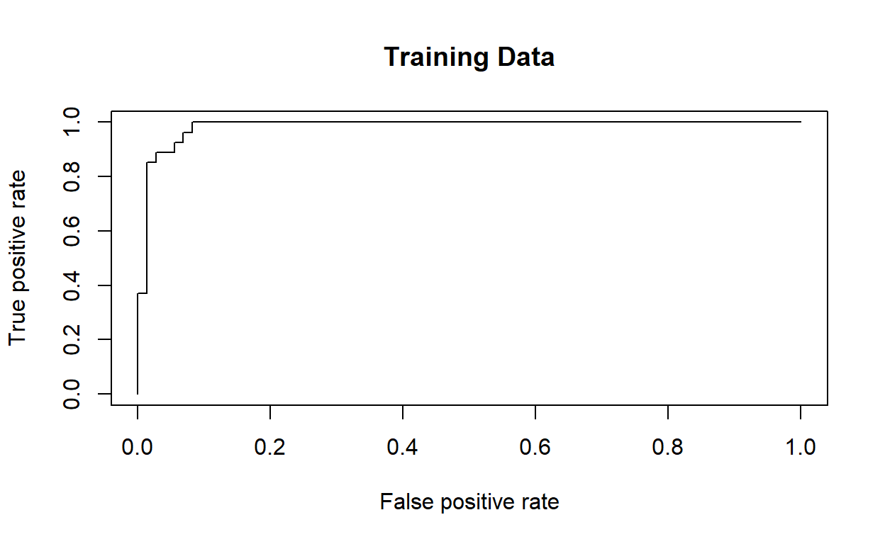
O SVM parece estar produzindo previsões precisas. Ao aumentar \(\gamma\), podemos obter um ajuste mais flexível e gerar melhorias adicionais na precisão.
svmfit.flex <-svm(y ~., data = dat[train, ],
kernel = "radial", gamma = 50, cost = 1,
decision.values = T)
fitted <- attributes(
predict(svmfit.flex, dat[train, ], decision.values = T)
)$decision.values
rocplot(-fitted, dat[train, "y"], col = "red")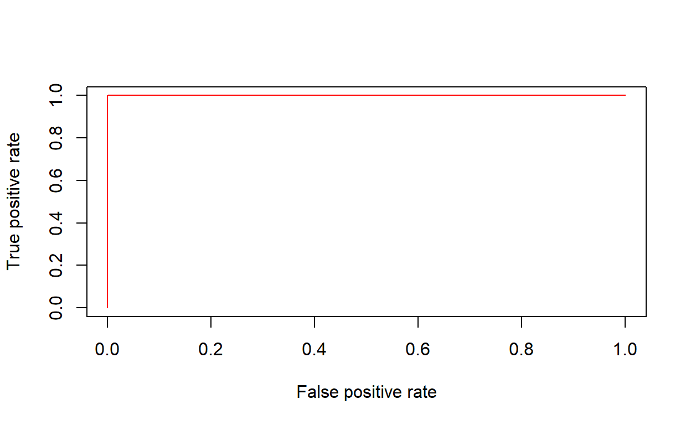
No entanto, essas curvas ROC são todas baseadas nos dados de treinamento. Nosso interesse real está no nível de precisão das previsões nos dados de teste. Quando calculamos as curvas ROC nos dados de teste, o modelo com \(\gamma = 2\) parece fornecer os resultados mais precisos.
# Obtém os valores de decisão para os dados de teste usando o modelo ajustado svmfit.opt
fitted <- attributes(
predict(svmfit.opt, dat[-train, ], decision.values = TRUE) # Predição com valores de decisão
)$decision.values # Extrai os valores de decisão do objeto retornado
# Plota a curva ROC para o modelo svmfit.opt nos dados de teste
rocplot(
-fitted, # Usa o negativo dos valores ajustados
dat[-train, "y"], # Rótulos reais das classes nos dados de teste
main = "Test Data" # Define o título do gráfico
)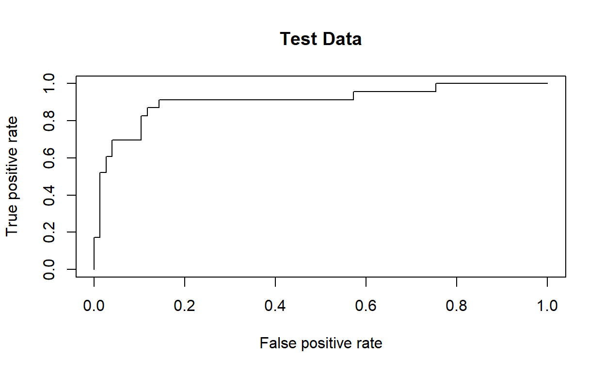
# Obtém os valores de decisão para os dados de teste usando o modelo ajustado svmfit.flex
fitted <- attributes(
predict(svmfit.flex, dat[-train, ], decision.values = TRUE) # Predição com valores de decisão
)$decision.values # Extrai os valores de decisão do objeto retornado
# Adiciona a curva ROC do modelo svmfit.flex
rocplot(
-fitted, # Usa o negativo dos valores ajustados
dat[-train, "y"], # Rótulos reais das classes nos dados de teste
col = "red" # Define a cor da curva como vermelha
)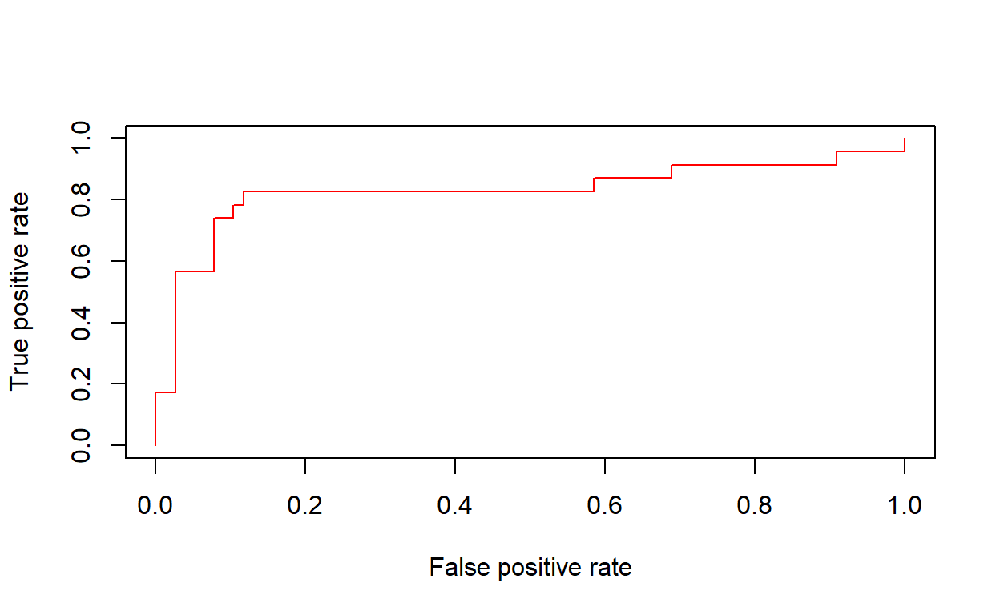
Se a resposta for um fator com mais de dois níveis, a função svm() realizará classificação multiclasse usando a abordagem um-contra-um. Neste exemplo, geramos uma terceira classe de observações. A biblioteca e1071 também pode ser usada para realizar regressão de vetores de suporte quando o vetor de resposta é numérico em vez de um fator.
# Define semente aleatória para reprodutibilidade
set.seed(1)
# Adiciona terceira classe de observações
x <- rbind(x, matrix(rnorm(50 * 2), ncol = 2))
y <- c(y, rep(0, 50))
# Ajusta coordenada y para nova classe
x[y == 0, 2] <- x[y == 0, 2] + 2
# Cria dataframe
dat <- data.frame(x = x, y = as.factor(y))
# Plota dados com cores diferentes para cada classe
par(mfrow = c(1, 1))
plot(x, col = (y + 1))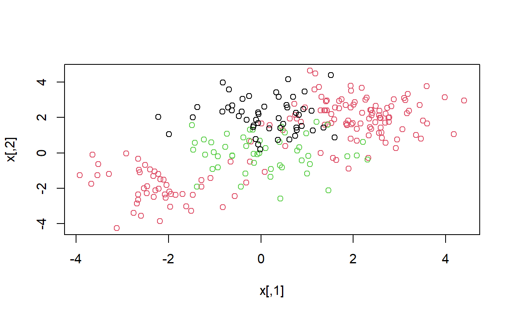
# Treina SVM com kernel radial
svmfit <- svm(y ~ ., data = dat, kernel = "radial", cost = 10, gamma = 1)
# Plota resultado do SVM
plot(svmfit, dat)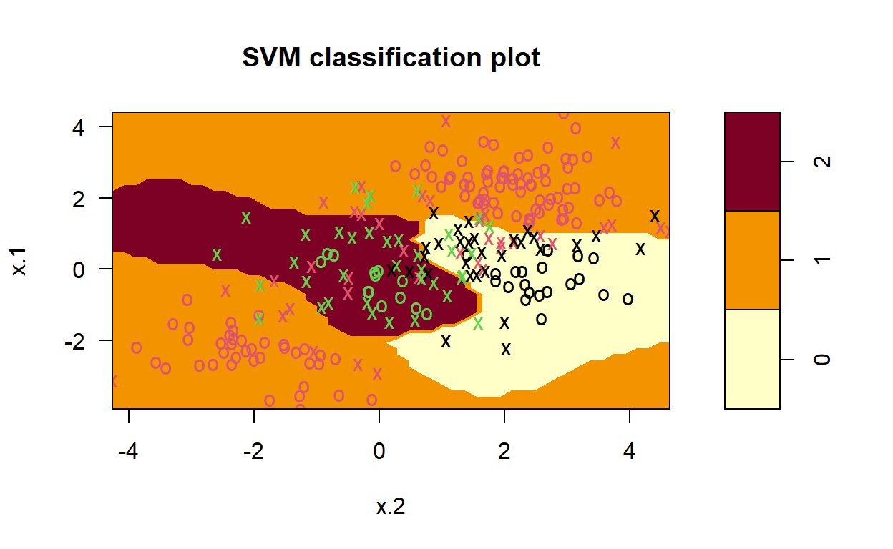